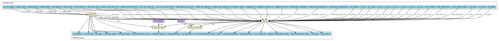

MGnify (http://www.ebi.ac.uk/metagenomics) provides a free to use platform for the assembly, analysis and archiving of microbiome data derived from sequencing microbial populations that are present in particular environments. Over the past 2 years, MGnify (formerly EBI Metagenomics) has more than doubled the number of publicly available analysed datasets held within the resource. Recently, an updated approach to data analysis has been unveiled (version 5.0), replacing the previous single pipeline with multiple analysis pipelines that are tailored according to the input data, and that are formally described using the Common Workflow Language, enabling greater provenance, reusability, and reproducibility. MGnify's new analysis pipelines offer additional approaches for taxonomic assertions based on ribosomal internal transcribed spacer regions (ITS1/2) and expanded protein functional annotations. Biochemical pathways and systems predictions have also been added for assembled contigs. MGnify's growing focus on the assembly of metagenomic data has also seen the number of datasets it has assembled and analysed increase six-fold. The non-redundant protein database constructed from the proteins encoded by these assemblies now exceeds 1 billion sequences. Meanwhile, a newly developed contig viewer provides fine-grained visualisation of the assembled contigs and their enriched annotations. Documentation: https://docs.mgnify.org/en/latest/analysis.html#raw-reads-analysis-pipeline
{kind=link}